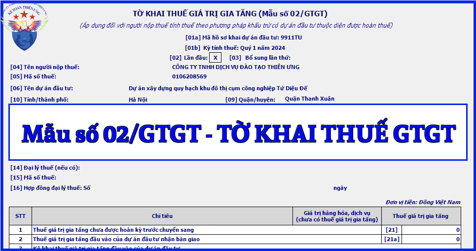

Mẫu tờ khai thuế giá trị gia tăng áp dụng đối với người nộp thuế tính thuế theo phương pháp khấu trừ có dự án đầu tư thuộc diện được hoàn thuế mới nhất năm 2024 là mẫu số: 02/GTGT được ban hành kèm theo Thông tư số 80/2021/TT-BTC
|
CỘNG HÒA XÃ HỘI CHỦ NGHĨA VIỆT NAM
Độc lập - Tự do - Hạnh phúc
TỜ KHAI THUẾ GIÁ TRỊ GIA TĂNG
(Áp dụng đối với người nộp thuế tính thuế theo phương pháp khấu trừ
có dự án đầu tư thuộc diện được hoàn thuế)
[01a] Mã hồ sơ khai dự án đầu tư: ...... [01b] Kỳ tính thuế: Tháng 09 năm 2026 /Quý III năm 2026
[04] Tên người nộp thuế:........................................................
[05] Mã số thuế:
[06] Tên dự án đầu tư:............................................................. [07] Địa chỉ thực hiện dự án đầu tư:.................... [08] Xã/phường:....................... [09] Quận/huyện:............................... [10] Tỉnh/thành phố:.................................... [11] Văn bản phê duyệt dự án đầu tư: Số................ ngày…….. của...................... [12] Tên chủ dự án đầu tư :.................................................................................. [13] Mã số thuế: [14] Tên đại lý thuế (nếu có):.............................................................. [15] Mã số thuế: [16] Hợp đồng đại lý thuế: Số......................... ngày..............................
Đơn vị tiền: Đồng Việt Nam
|
||||||||||||||||||||||||||||||||||||||||||||||||||||||||||||||||||||
Cách kê khai Tờ khai thuế giá trị gia tăng - mẫu số 02/GTGT theo TT 80/2021 như sau:
I. Đối tượng áp dụng
- Người nộp thuế thuộc đối tượng nộp thuế GTGT theo phương pháp khấu trừ đang hoạt động có dự án đầu tư thuộc diện được hoàn thuế giá trị gia tăng tại địa bàn khác tỉnh, thành phố trực thuộc trung ương với nơi người nộp thuế đóng trụ sở chính thì phải lập hồ sơ khai thuế giá trị gia tăng riêng cho từng dự án đầu tư và nộp hồ sơ khai thuế cho Cục Thuế nơi có dự án đầu tư.
- Trường hợp Chủ dự án đầu tư giao Ban quản lý dự án và Chi nhánh tại địa phương cấp tỉnh khác địa phương nơi Chủ dự án đầu tư đóng trụ sở chính thay mặt Chủ dự án đầu tư trực tiếp quản lý một hoặc nhiều dự án đầu tư tại nhiều địa phương thì Ban quản lý dự án và Chi nhánh phải lập hồ sơ khai thuế riêng đối với từng dự án đầu tư nộp cho cơ quan thuế nơi có dự án đầu tư và phải bù trừ số thuế GTGT đầu vào của dự án đầu tư với số thuế GTGT phải nộp của tất cả các hoạt động kinh doanh cùng kỳ tính thuế của Chủ dự án đầu tư.
II. Hướng dẫn kê khai tờ khai thuế gtgt mẫu số 02/GTGT
* Phần thông tin chung:
+ Chỉ tiêu [01a] - mã hồ sơ khai dự án đầu tư: Người nộp thuế tự xác định mã hồ sơ khai dự án đầu tư đảm bảo phải duy nhất theo mã số thuế của người nộp thuế cho từng dự án đầu tư với các thông tin từ chỉ tiêu [06] đến [13].
+ Chỉ tiêu [01b] - Kỳ tính thuế: Khai kỳ tính thuế là tháng phát sinh nghĩa vụ thuế. Trường hợp người nộp thuế được cơ quan thuế chấp thuận khai thuế theo quý hoặc người nộp thuế mới thành lập thì ghi kỳ tính thuế là quý phát sinh nghĩa vụ thuế.
+ Chỉ tiêu [02], [03]: Tích chọn “Lần đầu”. Trường hợp người nộp thuế phát hiện hồ sơ khai thuế lần đầu đã nộp cho cơ quan thuế có sai, sót thì kê khai bổ sung theo số thứ tự của từng lần bổ sung.
Lưu ý:
- NNT thực hiện khai điện tử, Hệ thống Etax hỗ trợ NNT xác định Tờ khai thuế “Lần đầu” tương ứng với từng hoạt động sản xuất kinh doanh tại chỉ tiêu [01a] .
- Kể từ thời điểm Hệ thống Etax có Thông báo chấp nhận hồ sơ khai thuế đối với Tờ khai thuế “Lần đầu”, các Tờ khai thuế tiếp theo của cùng kỳ tính thuế, cùng hoạt động sản xuất kinh doanh là tờ khai “Bổ sung”. NNT phải nộp Tờ khai “Bổ sung” theo quy định về khai bổ sung.
+ Chỉ tiêu [04], [05]: Khai thông tin “Tên người nộp thuế và mã số thuế” theo thông tin đăng ký doanh nghiệp hoặc đăng ký thuế của người nộp thuế.
+ Chỉ tiêu [06], [07], [08], [09], [10], [11]: Khai thông tin về tên dự án đầu tư, địa chỉ thực hiện dự án đầu tư, văn bản phê duyệt dự án đầu tư theo thông tin của dự án mà người nộp thuế đang thực hiện khai thuế.
+ Chỉ tiêu [12], [13]: Khai thông tin về tên chủ dự án đầu tư, mã số thuế của chủ dự án đầu tư được giao thực hiện dự án mà người nộp thuế đang thực hiện khai thuế.
+ Chỉ tiêu [14], [15], [16]: Trường hợp Đại ký thuế thực hiện khai thuế: Khai thông tin “Tên đại lý thuế, mã số thuế” “số, ngày của hợp đồng đại lý thuế”. Đại lý thuế phải có tình trạng đăng ký thuế “Đang hoạt động” và Hợp đồng phải đang còn hiệu lực tương ứng tại thời điểm khai thuế.
Lưu ý: NNT khai thuế điện tử, Hệ thống Etax tự động hỗ trợ hiển thị thông tin về Đại lý thuế, Hợp đồng đại lý thuế đã đăng ký với cơ quan thuế để NNT lựa chọn trong trường hợp NNT có nhiều Đại lý thuế, Hợp đồng.
* Phần kê khai các chỉ tiêu của bảng:
1. Thuế giá trị gia tăng chưa được hoàn kỳ trước chuyển sang:
+ Chỉ tiêu [21]: Khai thông tin thuế GTGT chưa được hoàn kỳ trước chuyển sang. Số liệu này được lấy từ chỉ tiêu 32 “Thuế giá trị gia tăng đầu vào của dự án đầu tư chưa được hoàn chuyển kỳ sau” của Tờ khai thuế GTGT mẫu số 02/GTGT kỳ tính thuế trước liền kề.
2. Thuế giá trị gia tăng đầu vào của dự án đầu tư nhận bàn giao:
+ Chỉ tiêu [21a]: Khai số thuế giá trị gia tăng đầu vào của dự án đầu tư thuộc trường hợp được hoàn thuế GTGT do chủ dự án giao quản lý dự án hoặc từ các đơn vị khác do chủ dự án phân công quản lý.
3. Kê khai thuế giá trị gia tăng đầu vào của dự án đầu tư:
3.1. Giá trị và thuế giá trị gia tăng của hàng hóa, dịch vụ mua vào:
+ Chỉ tiêu [22] và chỉ tiêu [23]: Khai thông tin giá trị HHDV và số thuế GTGT của HHDV mà người nộp thuế mua vào trong kỳ phục vụ trực tiếp cho dự án đầu tư.
- Trường hợp hoá đơn mua vào là loại hoá đơn, chứng từ đặc thù như tem, vé cước vận tải,... mà giá mua đã bao gồm thuế GTGT thì căn cứ giá mua đã có thuế GTGT để tính ra doanh số mua chưa có thuế GTGT theo công thức:
- Giá mua chưa có thuế GTGT = Giá bán ghi trên hoá đơn/(1 + thuế suất)
- Riêng các hoá đơn bất hợp pháp thì không được kê khai vào chỉ tiêu này.
+ Chỉ tiêu [22a], [23a]: Số liệu ghi vào chỉ tiêu này tương tự như cách kê khai chỉ tiêu chỉ tiêu [22], [23] nhưng chỉ kê khai riêng đối với giá trị mua vào và thuế GTGT mua vào của hàng hóa, dịch vụ nhập khẩu.
3.2. Điều chỉnh giá trị và thuế giá trị gia tăng của hàng hóa, dịch vụ mua vào các kỳ trước:
+ Chỉ tiêu từ [24] đến [27]: Khai số liệu đã khai điều chỉnh tương ứng tại hồ sơ khai bổ sung hồ sơ khai thuế các kỳ tính thuế trước đó. Riêng trường hợp cơ quan thuế, cơ quan có thẩm quyền đã ban hành kết luận, quyết định xử lý về thuế có điều chỉnh tương ứng các kỳ trước thì khai vào hồ sơ khai thuế của kỳ tính thuế nhận được kết luận, quyết định xử lý về thuế (không phải khai bổ sung hồ sơ khai thuế).
4. Tổng số thuế giá trị gia tăng đầu vào của hàng hóa, dịch vụ mua vào:
+ Chỉ tiêu [28]: Số liệu để khai vào chỉ tiêu này được xác định theo công thức [28]=[21]+[21a]+[23]+[25]-[27]
5. Thuế giá trị gia tăng mua vào của dự án đầu tư bù trừ với thuế giá trị gia tăng phải nộp của hoạt động sản xuất kinh doanh cùng kỳ tính thuế:
+ Chỉ tiêu [28a]: Khai thuế GTGT mua vào của dự án đầu tư bù trừ với thuế GTGT phải nộp của hoạt động SXKD tại chỉ tiêu [40b] của Tờ khai thuế GTGT mẫu số 01/GTGT cùng kỳ tính thuế của chủ dự án đầu tư trong trường hợp chủ đầu tư trực tiếp khai tờ khai thuế GTGT mẫu số 02/GTGT. Chỉ tiêu [28a] ≤ chỉ tiêu [28].
6. Thuế giá trị gia tăng mua vào của dự án đầu tư bù trừ với thuế giá trị gia tăng phải nộp của hoạt động sản xuất kinh doanh cùng kỳ tính thuế của chủ đầu tư (trường hợp người nộp thuế được chủ đầu tư giao quản lý dự án đầu tư).
+ Chỉ tiêu [28b]: Khai thuế GTGT mua vào của dự án đầu tư bù trừ với thuế GTGT phải nộp của hoạt động SXKD tại chỉ tiêu [40b] của Tờ khai thuế GTGT mẫu số 01/GTGT cùng kỳ tính thuế của chủ dự án đầu tư trong trường hợp người nộp thuế là chi nhánh, ban quản lý dự án được chủ đầu tư giao quản lý dự án đầu tư. Chỉ tiêu [28b] ≤ Chỉ tiêu [28] - Chỉ tiêu [28a].
7. Thuế giá trị gia tăng đầu vào chưa được hoàn đến kỳ tính thuế của dự án đầu tư:
+ Chỉ tiêu [29]: Số liệu ghi vào chỉ tiêu này được xác định theo công thức [29]=[28]-[28a]-[28b].
8. Thuế giá trị gia tăng đề nghị hoàn:
+ Chỉ tiêu [30]: Khai số thuế GTGT thuộc trường hợp được hoàn thuế theo quy định của pháp luật về thuế GTGT mà người nộp thuế đề nghị hoàn. Chỉ tiêu [30] ≤ chỉ tiêu [29].
9. Thuế giá trị gia tăng đầu vào của dự án đầu tư chưa được hoàn bàn giao trong kỳ:
+ Chỉ tiêu [31]: Khi dự án đầu tư để thành lập doanh nghiệp đã hoàn thành và hoàn tất các thủ tục về đăng ký kinh doanh, đăng ký nộp thuế, Chủ dự án đầu tư phải tổng hợp số thuế giá trị gia tăng chưa được hoàn của dự án để bàn giao cho doanh nghiệp mới thành lập và kê khai vào chỉ tiêu này. Chỉ tiêu [31] ≤ (chỉ tiêu [29] - chỉ tiêu [30]).
10. Thuế giá trị gia tăng đầu vào của dự án đầu tư chưa được hoàn chuyển kỳ sau:
+ Chỉ tiêu [32]: Số liệu ghi vào chỉ tiêu này được xác định theo công thức [32]=[29]-[30]-[31].
* Phần ký tên, đóng dấu:
+ Người đại diện theo pháp luật của NNT hoặc người đại diện hợp pháp của người nộp thuế ký tên, đóng dấu hoặc ký điện tử để nộp tờ khai đến cơ quan thuế và chịu trách nhiệm trước pháp luật về số liệu đã khai. Trường hợp đại lý thuế khai thay cho người nộp thuế thì người đại diện theo pháp luật của đại lý thuế ký tên, đóng dấu hoặc ký điện tử thay cho NNT và ghi thêm thông tin họ và tên nhân viên đại lý thuế trực tiếp thực hiện khai thuế và số chứng chỉ hành nghề của nhân viên này vào thông tin tương ứng.
=======================

=======================
Các bạn muốn thành thạo các kỹ năng kê khai làm báo cáo thuế, xử lý hóa đơn chứng từ, xử lý doanh thu - chi phí, cân đối lãi lỗ của doanh nghiệp thì các bạn thể tham gia Khóa Học Thực Hành Kế Toán Thuế tại Công ty đào tạo Kế Toán Diệu Tâm
Chi tiết về khóa học các bạn xem tại đây nhé:
Học kế toán Thuế thực hành theo công việc thực tế
Học kế toán Thuế thực hành theo công việc thực tế
===================================================